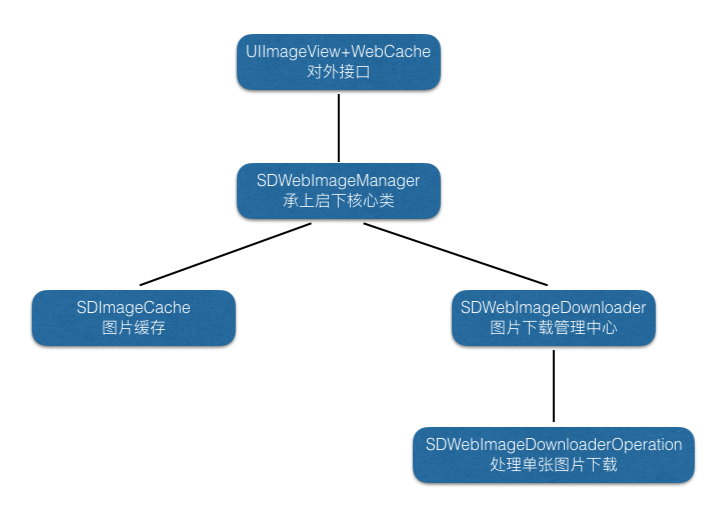
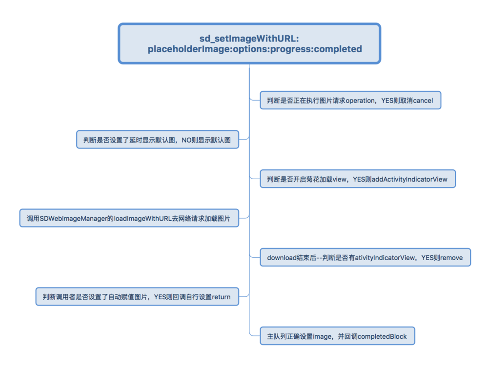
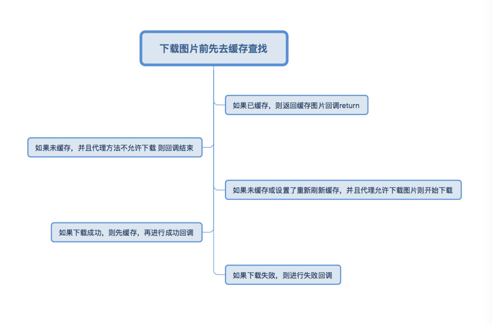
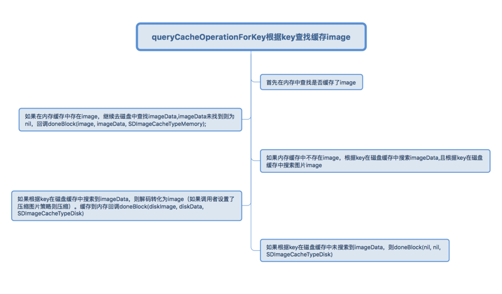

iOS 源代码分析----SDWebImage
世人都说阅读源代码对于功力的提升是十分显著的, 但是很多的著名开源框架源代码动辄上万行, 复杂度实在太高, 在暑假的时候我曾经试图读一些开源框架的源代码, 比如说 AFNetworking, SDWebImage, ReactiveCocoa 但是由于当时比较浮躁, 实在没法静下心来看, 而且有一些急功近利, 所以面对宝藏实在无力挖掘.
而最近, 由于时间比较充裕, 也终于能静下心来一段一段分析这些著名项目的源代码, 也准备开始写一些关于 iOS 源代码分析的 post.
第一篇文章为什么选择 SDWebImage, 原因其实我也忘了…. :(
简洁的接口
首先来介绍一下这个 SDWebImage 这个著名开源框架吧, 这个开源框架的主要作用就是:
Asynchronous image downloader with cache support with an UIImageView category.
一个异步下载图片并且支持缓存的 UIImageView 分类.
就这么直译过来相信各位也能理解, 框架中最最常用的方法其实就是这个:
[self.imageView sd_setImageWithURL:[NSURL URLWithString:@"url"]
placeholderImage:[UIImage imageNamed:@"placeholder.png"]];
当然这个框架中还有 UIButton 的分类, 可以给 UIButton 异步加载图片, 不过这个并没有 UIImageView 分类中的这个方法常用.
这个框架的设计还是极其的优雅和简洁, 主要的功能就是这么一行代码, 而其中复杂的实现细节全部隐藏在这行代码之后, 正应了那句话:
把简洁留给别人, 把复杂留给自己.
我们已经看到了这个框架简洁的接口, 接下来我们看一下 SDWebImage 是用什么样的方式优雅地实现异步加载图片和缓存的功能呢?
复杂的实现
其实复杂只是相对于简洁而言的, 并不是说 SDWebImage 的实现就很糟糕, 相反, 它的实现还是非常 amazing 的, 在这里我们会忽略很多的实现细节, 并不会对每一行源代码逐一解读.
首先, 我们从一个很高的层次来看一下这个框架是如何组织的.

这张图片已经将这个框架是如何组织的基本展示了出来, UIImageView+WebCache 和 UIButton+WebCache 直接为表层的 UIKit 框架提供接口, 而 SDWebImageManger 负责处理和协调 SDWebImageDownloader 和 SDWebImageCache. 并与 UIKit 层进行交互, 而底层的一些类为更高层级的抽象提供支持.
UIImageView+WebCache
接下来我们就以 UIImageView+WebCache 中的
- (void)sd_setImageWithURL:(NSURL *)url
placeholderImage:(UIImage *)placeholder;
这一方法为入口研究一下 SDWebImage 是怎样工作的. 我们打开上面这段方法的实现代码 UIImageView+WebCache.m
当然你也可以 $ git clone git@github.com:rs/SDWebImage.git 到本地来查看.
- (void)sd_setImageWithURL:(NSURL *)url
placeholderImage:(UIImage *)placeholder {
[self sd_setImageWithURL:url
placeholderImage:placeholder
options:0
progress:nil
completed:nil];
}
这段方法唯一的作用就是调用了另一个方法
[self sd_setImageWithURL:placeholderImage:options:progress:completed:]
在这个文件中, 你会看到很多的 sd_setImageWithURL... 方法, 它们最终都会调用上面这个方法, 只是根据需要传入不同的参数, 这在很多的开源项目中乃至我们平时写的项目中都是很常见的. 而这个方法也是 UIImageView+WebCache 中的核心方法.
这里就不再复制出这个方法的全部实现了.
操作的管理
这是这个方法的第一行代码:
// UIImageView+WebCache
// sd_setImageWithURL:placeholderImage:options:progress:completed: #1
[self sd_cancelCurrentImageLoad];
这行看似简单的代码最开始是被我忽略的, 我后来才发现蕴藏在这行代码之后的思想, 也就是 SDWebImage 管理操作的办法.
框架中的所有操作实际上都是通过一个 operationDictionary 来管理, 而这个字典实际上是动态的添加到 UIView 上的一个属性, 至于为什么添加到 UIView 上, 主要是因为这个 operationDictionary 需要在 UIButton 和 UIImageView 上重用, 所以需要添加到它们的根类上.
这行代码是要保证没有当前正在进行的异步下载操作, 不会与即将进行的操作发生冲突, 它会调用:
// UIImageView+WebCache
// sd_cancelCurrentImageLoad #1
[self sd_cancelImageLoadOperationWithKey:@"UIImageViewImageLoad"]
而这个方法会使当前 UIImageView 中的所有操作都被 cancel. 不会影响之后进行的下载操作.
占位图的实现
// UIImageView+WebCache
// sd_setImageWithURL:placeholderImage:options:progress:completed: #4
if (!(options & SDWebImageDelayPlaceholder)) {
self.image = placeholder;
}
如果传入的 options 中没有 SDWebImageDelayPlaceholder(默认情况下 options == 0), 那么就会为 UIImageView 添加一个临时的 image, 也就是占位图.
获取图片
// UIImageView+WebCache
// sd_setImageWithURL:placeholderImage:options:progress:completed: #8
if (url)
接下来会检测传入的 url 是否非空, 如果非空那么一个全局的 SDWebImageManager 就会调用以下的方法获取图片:
[SDWebImageManager.sharedManager downloadImageWithURL:options:progress:completed:]
下载完成后会调用 (SDWebImageCompletionWithFinishedBlock)completedBlock 为 UIImageView.image 赋值, 添加上最终所需要的图片.
// UIImageView+WebCache
// sd_setImageWithURL:placeholderImage:options:progress:completed: #10
dispatch_main_sync_safe(^{
if (!wself) return;
if (image) {
wself.image = image;
[wself setNeedsLayout];
} else {
if ((options & SDWebImageDelayPlaceholder)) {
wself.image = placeholder;
[wself setNeedsLayout];
}
}
if (completedBlock && finished) {
completedBlock(image, error, cacheType, url);
}
});
dispatch_main_sync_safe 宏定义
上述代码中的 dispatch_main_sync_safe 是一个宏定义, 点进去一看发现宏是这样定义的
#define dispatch_main_sync_safe(block)\
if ([NSThread isMainThread]) {\
block();\
} else {\
dispatch_sync(dispatch_get_main_queue(), block);\
}
相信这个宏的名字已经讲他的作用解释的很清楚了: 因为图像的绘制只能在主线程完成, 所以, dispatch_main_sync_safe 就是为了保证 block 能在主线程中执行.
而最后, 在 [SDWebImageManager.sharedManager downloadImageWithURL:options:progress:completed:] 返回 operation 的同时, 也会向 operationDictionary 中添加一个键值对, 来表示操作的正在进行:
// UIImageView+WebCache
// sd_setImageWithURL:placeholderImage:options:progress:completed: #28
[self sd_setImageLoadOperation:operation forKey:@"UIImageViewImageLoad"];
它将 opertion 存储到 operationDictionary 中方便以后的 cancel.
到此为止我们已经对 SDWebImage 框架中的这一方法分析完了, 接下来我们将要分析 SDWebImageManager 中的方法
[SDWebImageManager.sharedManager downloadImageWithURL:options:progress:completed:]
SDWebImageManager
在 SDWebImageManager.h 中你可以看到关于 SDWebImageManager 的描述:
The SDWebImageManager is the class behind the UIImageView+WebCache category and likes. It ties the asynchronous downloader (SDWebImageDownloader) with the image cache store (SDImageCache). You can use this class directly to benefit from web image downloading with caching in another context than a UIView.
这个类就是隐藏在 UIImageView+WebCache 背后, 用于处理异步下载和图片缓存的类, 当然你也可以直接使用 SDWebImageManager 的上述方法 downloadImageWithURL:options:progress:completed: 来直接下载图片.
可以看到, 这个类的主要作用就是为 UIImageView+WebCache 和 SDWebImageDownloader, SDImageCache 之间构建一个桥梁, 使它们能够更好的协同工作, 我们在这里分析这个核心方法的源代码, 它是如何协调异步下载和图片缓存的.
// SDWebImageManager
// downloadImageWithURL:options:progress:completed: #6
if ([url isKindOfClass:NSString.class]) {
url = [NSURL URLWithString:(NSString *)url];
}
if (![url isKindOfClass:NSURL.class]) {
url = nil;
}
这块代码的功能是确定 url 是否被正确传入, 如果传入参数的是 NSString 类型就会被转换为 NSURL. 如果转换失败, 那么 url 会被赋值为空, 这个下载的操作就会出错.
SDWebImageCombinedOperation
当 url 被正确传入之后, 会实例一个非常奇怪的 “operation”, 它其实是一个遵循 SDWebImageOperation 协议的 NSObject 的子类. 而这个协议也非常的简单:
@protocol SDWebImageOperation <NSObject>
- (void)cancel;
@end
这里仅仅是将这个 SDWebImageOperation 类包装成一个看着像 NSOperation 其实并不是 NSOperation 的类, 而这个类唯一与 NSOperation 的相同之处就是它们都可以响应 cancel 方法. (不知道这句看似像绕口令的话, 你看懂没有, 如果没看懂..请多读几遍).
而调用这个类的存在实际是为了使代码更加的简洁, 因为调用这个类的 cancel 方法, 会使得它持有的两个 operation 都被 cancel.
// SDWebImageCombinedOperation
// cancel #1
- (void)cancel {
self.cancelled = YES;
if (self.cacheOperation) {
[self.cacheOperation cancel];
self.cacheOperation = nil;
}
if (self.cancelBlock) {
self.cancelBlock();
_cancelBlock = nil;
}
}
而这个类, 应该是为了实现更简洁的 cancel 操作而设计出来的.
既然我们获取了 url, 再通过 url 获取对应的 key
NSString *key = [self cacheKeyForURL:url];
下一步是使用 key 在缓存中查找以前是否下载过相同的图片.
operation.cacheOperation = [self.imageCache
queryDiskCacheForKey:key
done:^(UIImage *image, SDImageCacheType cacheType) { ... }];
这里调用 SDImageCache 的实例方法 queryDiskCacheForKey:done: 来尝试在缓存中获取图片的数据. 而这个方法返回的就是货真价实的 NSOperation.
如果我们在缓存中查找到了对应的图片, 那么我们直接调用 completedBlock 回调块结束这一次的图片下载操作.
// SDWebImageManager
// downloadImageWithURL:options:progress:completed: #47
dispatch_main_sync_safe(^{
completedBlock(image, nil, cacheType, YES, url);
});
如果我们没有找到图片, 那么就会调用 SDWebImageDownloader 的实例方法:
id <SDWebImageOperation> subOperation =
[self.imageDownloader downloadImageWithURL:url
options:downloaderOptions
progress:progressBlock
completed:^(UIImage *downloadedImage, NSData *data, NSError *error, BOOL finished) { ... }];
如果这个方法返回了正确的 downloadedImage, 那么我们就会在全局的缓存中存储这个图片的数据:
[self.imageCache storeImage:downloadedImage
recalculateFromImage:NO
imageData:data
forKey:key
toDisk:cacheOnDisk];
并调用 completedBlock 对 UIImageView 或者 UIButton 添加图片, 或者进行其它的操作.
最后, 我们将这个 subOperation 的 cancel 操作添加到 operation.cancelBlock 中. 方便操作的取消.
operation.cancelBlock = ^{
[subOperation cancel];
}
SDWebImageCache
SDWebImageCache.h 这个类在源代码中有这样的注释:
SDImageCache maintains a memory cache and an optional disk cache.
它维护了一个内存缓存和一个可选的磁盘缓存, 我们先来看一下在上一阶段中没有解读的两个方法, 首先是:
- (NSOperation *)queryDiskCacheForKey:(NSString *)key
done:(SDWebImageQueryCompletedBlock)doneBlock;
这个方法的主要功能是异步的查询图片缓存. 因为图片的缓存可能在两个地方, 而该方法首先会在内存中查找是否有图片的缓存.
// SDWebImageCache
// queryDiskCacheForKey:done: #9
UIImage *image = [self imageFromMemoryCacheForKey:key];
这个 imageFromMemoryCacheForKey 方法会在 SDWebImageCache 维护的缓存 memCache 中查找是否有对应的数据, 而 memCache 就是一个 NSCache.
如果在内存中并没有找到图片的缓存的话, 就需要在磁盘中寻找了, 这个就比较麻烦了.
在这里会调用一个方法 diskImageForKey 这个方法的具体实现我在这里就不介绍了, 涉及到很多底层 Core Foundation 框架的知识, 不过这里文件名字的存储使用 MD5 处理过后的文件名.
// SDImageCache
// cachedFileNameForKey: #6
CC_MD5(str, (CC_LONG)strlen(str), r);
对于其它的实现细节也就不多说了…
如果在磁盘中查找到对应的图片, 我们会将它复制到内存中, 以便下次的使用.
// SDImageCache
// queryDiskCacheForKey:done: #24
UIImage *diskImage = [self diskImageForKey:key];
if (diskImage) {
CGFloat cost = diskImage.size.height * diskImage.size.width * diskImage.scale;
[self.memCache setObject:diskImage forKey:key cost:cost];
}
这些就是 SDImageCache 的核心内容了, 而接下来将介绍如果缓存没有命中, 图片是如何被下载的.
SDWebImageDownloader
按照之前的惯例, 我们先来看一下 SDWebImageDownloader.h 中对这个类的描述.
Asynchronous downloader dedicated and optimized for image loading.
专用的并且优化的图片异步下载器.
这个类的核心功能就是下载图片, 而核心方法就是上面提到的:
- (id <SDWebImageOperation>)downloadImageWithURL:(NSURL *)url
options:(SDWebImageDownloaderOptions)options
progress:(SDWebImageDownloaderProgressBlock)progressBlock
completed:(SDWebImageDownloaderCompletedBlock)completedBlock;
回调
这个方法直接调用了另一个关键的方法:
- (void)addProgressCallback:(SDWebImageDownloaderProgressBlock)progressBlock
andCompletedBlock:(SDWebImageDownloaderCompletedBlock)completedBlock
forURL:(NSURL *)url
createCallback:(SDWebImageNoParamsBlock)createCallback
它为这个下载的操作添加回调的块, 在下载进行时, 或者在下载结束时执行一些操作, 先来阅读一下这个方法的源代码:
// SDWebImageDownloader
// addProgressCallback:andCompletedBlock:forURL:createCallback: #10
BOOL first = NO;
if (!self.URLCallbacks[url]) {
self.URLCallbacks[url] = [NSMutableArray new];
first = YES;
}
// Handle single download of simultaneous download request for the same URL
NSMutableArray *callbacksForURL = self.URLCallbacks[url];
NSMutableDictionary *callbacks = [NSMutableDictionary new];
if (progressBlock) callbacks[kProgressCallbackKey] = [progressBlock copy];
if (completedBlock) callbacks[kCompletedCallbackKey] = [completedBlock copy];
[callbacksForURL addObject:callbacks];
self.URLCallbacks[url] = callbacksForURL;
if (first) {
createCallback();
}
方法会先查看这个 url 是否有对应的 callback, 使用的是 downloader 持有的一个字典 URLCallbacks.
如果是第一次添加回调的话, 就会执行 first = YES, 这个赋值非常的关键, 因为 first 不为 YES 那么 HTTP 请求就不会被初始化, 图片也无法被获取.
然后, 在这个方法中会重新修正在 URLCallbacks 中存储的回调块.
NSMutableArray *callbacksForURL = self.URLCallbacks[url];
NSMutableDictionary *callbacks = [NSMutableDictionary new];
if (progressBlock) callbacks[kProgressCallbackKey] = [progressBlock copy];
if (completedBlock) callbacks[kCompletedCallbackKey] = [completedBlock copy];
[callbacksForURL addObject:callbacks];
self.URLCallbacks[url] = callbacksForURL;
如果是第一次添加回调块, 那么就会直接运行这个 createCallback 这个 block, 而这个 block, 就是我们在前一个方法 downloadImageWithURL:options:progress:completed: 中传入的回调块.
// SDWebImageDownloader
// downloadImageWithURL:options:progress:completed: #4
[self addProgressCallback:progressBlock andCompletedBlock:completedBlock forURL:url createCallback:^{ ... }];
我们下面来分析这个传入的无参数的代码. 首先这段代码初始化了一个 NSMutableURLRequest:
// SDWebImageDownloader
// downloadImageWithURL:options:progress:completed: #11
NSMutableURLRequest *request = [[NSMutableURLRequest alloc]
initWithURL:url
cachePolicy:...
timeoutInterval:timeoutInterval];
这个 request 就用于在之后发送 HTTP 请求.
在初始化了这个 request 之后, 又初始化了一个 SDWebImageDownloaderOperation 的实例, 这个实例, 就是用于请求网络资源的操作. 它是一个 NSOperation 的子类,
// SDWebImageDownloader
// downloadImageWithURL:options:progress:completed: #20
operation = [[SDWebImageDownloaderOperation alloc]
initWithRequest:request
options:options
progress:...
completed:...
cancelled:...}];
但是在初始化之后, 这个操作并不会开始(NSOperation 实例只有在调用 start 方法或者加入 NSOperationQueue 才会执行), 我们需要将这个操作加入到一个 NSOperationQueue 中.
// SDWebImageDownloader
// downloadImageWithURL:options:progress:completed: #59
[wself.downloadQueue addOperation:operation];
只有将它加入到这个下载队列中, 这个操作才会执行.
SDWebImageDownloaderOperation
这个类就是处理 HTTP 请求, URL 连接的类, 当这个类的实例被加入队列之后, start 方法就会被调用, 而 start 方法首先就会产生一个 NSURLConnection.
// SDWebImageDownloaderOperation
// start #1
@synchronized (self) {
if (self.isCancelled) {
self.finished = YES;
[self reset];
return;
}
self.executing = YES;
self.connection = [[NSURLConnection alloc] initWithRequest:self.request delegate:self startImmediately:NO];
self.thread = [NSThread currentThread];
}
而接下来这个 connection 就会开始运行:
// SDWebImageDownloaderOperation
// start #29
[self.connection start];
它会发出一个 SDWebImageDownloadStartNotification 通知
// SDWebImageDownloaderOperation
// start #35
[[NSNotificationCenter defaultCenter] postNotificationName:SDWebImageDownloadStartNotification object:self];
代理
在 start 方法调用之后, 就是 NSURLConnectionDataDelegate 中代理方法的调用.
- (void)connection:(NSURLConnection *)connection didReceiveResponse:(NSURLResponse *)response;
- (void)connection:(NSURLConnection *)connection didReceiveResponse:(NSURLResponse *)response;
- (void)connectionDidFinishLoading:(NSURLConnection *)aConnection;
在这三个代理方法中的前两个会不停回调 progressBlock 来提示下载的进度.
而最后一个代理方法会在图片下载完成之后调用 completionBlock 来完成最后 UIImageView.image 的更新.
而这里调用的 progressBlock completionBlock cancelBlock 都是在之前存储在 URLCallbacks 字典中的.
到目前为止, 我们就基本解析了 SDWebImage 中
[self.imageView sd_setImageWithURL:[NSURL URLWithString:@"url"]
placeholderImage:[UIImage imageNamed:@"placeholder.png"]];
这个方法执行的全部过程了.
流程图
UIImageView+WebCache/UIView+WebCache
UIImageView+WebCache 对外使用的 API 入口，这个类的接口设计把设计模式五大原则之一的接口分离原则体现的淋漓尽致。
接口分离原则：为特定功能提供特定的接口，不要使用单一的总接口包括所有功能，而是应该根据功能把这些接口分割，减少依赖，不能强迫用户去依赖那些他们不使用的接口。

SDWebImageManager
SDWebImageManager 类是 SDWebImage 中的核心类，主要负责调用 SDWebImageDownloader 进行图片下载，以及在下载之后利用 SDImageCache 进行图片缓存。并且此类还可以跳过 UIImageViewe/Cache 或者 UIView/Cache 单独使用，不仅局限于一个 UIView。

SDImageCache
SDImageCache 是 SDWebImage 的缓存中心。分三部分组成 memory 内存缓存，disk 硬盘缓存和无缓存组成。

SDWebImage 如何为 UIImageView 添加图片(面试回答)
SDWebImage 中为 UIView 提供了一个分类叫做 WebCache, 这个分类中有一个最常用的接口, sd_setImageWithURL:placeholderImage:, 这个分类同时提供了很多类似的方法, 这些方法最终会调用一个同时具有 option 、 progressBlock 、 completionBlock 的方法, 而在这个类最终被调用的方法首先会检查是否传入了 placeholderImage 以及对应的参数, 并设置 placeholderImage.
然后会获取 SDWebImageManager 中的单例调用一个 downloadImageWithURL:... 的方法来获取图片, 而这个 manager 获取图片的过程有大体上分为两部分, 它首先会在 SDWebImageCache 中寻找图片是否有对应的缓存, 它会以 url 作为数据的索引先在内存中寻找是否有对应的缓存, 如果缓存未命中就会在磁盘中利用 MD5 处理过的 key 来继续查询对应的数据, 如果找到了, 就会把磁盘中的缓存备份到内存中.
然而, 假设我们在内存和磁盘缓存中都没有命中, 那么 manager 就会调用它持有的一个 SDWebImageDownloader 对象的方法 downloadImageWithURL:... 来下载图片, 这个方法会在执行的过程中调用另一个方法 addProgressCallback:andCompletedBlock:fotURL:createCallback: 来存储下载过程中和下载完成的回调, 当回调块是第一次添加的时候, 方法会实例化一个 NSMutableURLRequest 和 SDWebImageDownloaderOperation, 并将后者加入 downloader 持有的下载队列开始图片的异步下载.
而在图片下载完成之后, 就会在主线程设置 image 属性, 完成整个图像的异步下载和配置.
总结
SDWebImage 的图片加载过程其实很符合我们的直觉:
- 查看缓存
- 缓存命中 -> 返回图片
- 更新
UIImageView
- 更新
- 缓存未命中 -> 异步下载图片
- 加入缓存
- 更新
UIImageView
- 缓存命中 -> 返回图片
只要有足够的耐心, 阅读这个开源项目的源代码也是没有太多困难的.